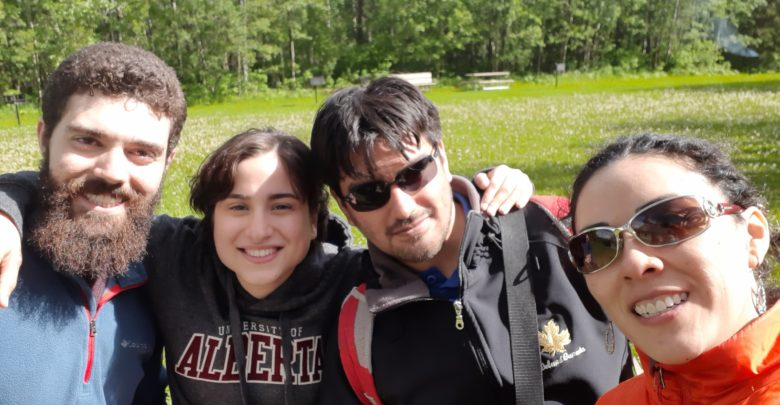
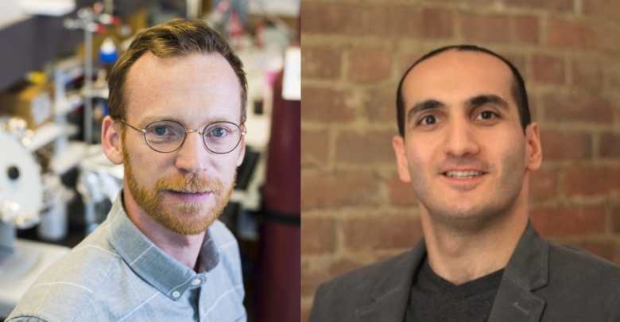
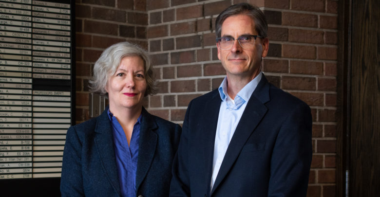

Journalism
In my spare time, I'm a volunteer news writer for UAlberta's student media source, The Gateway.
I've covered stories on...
deep learning research legacy by faculty members lost in Flight PS 752.student excellence in brain-computer interface and neuroscience technology.
less intrusive lithium extraction technology that takes advantage of oil sands waste.
 using imaging techniques like MRIs and MR spectroscopy to find an ALS biomarker.
using imaging techniques like MRIs and MR spectroscopy to find an ALS biomarker.
a study about how prolonged labour and cesarean sections affect infant gut microbiomes.
a new drug, while still in its research stages, that could offer a new way of treating resistant cancers.
a study that could help in the teaching of new languages and the rehabilitation of brain injuries.